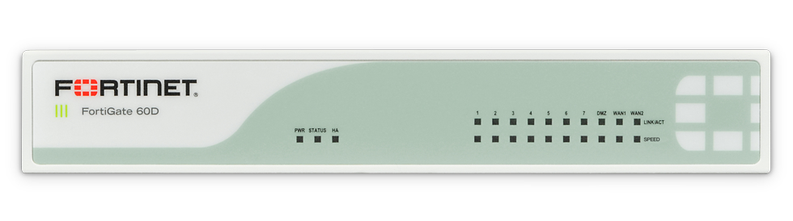
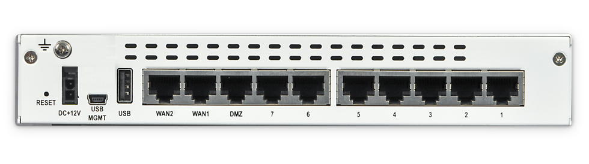
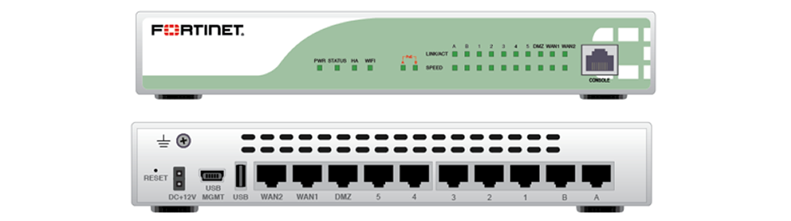
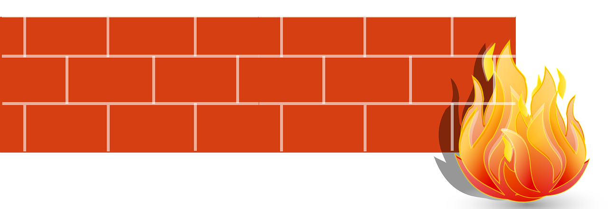
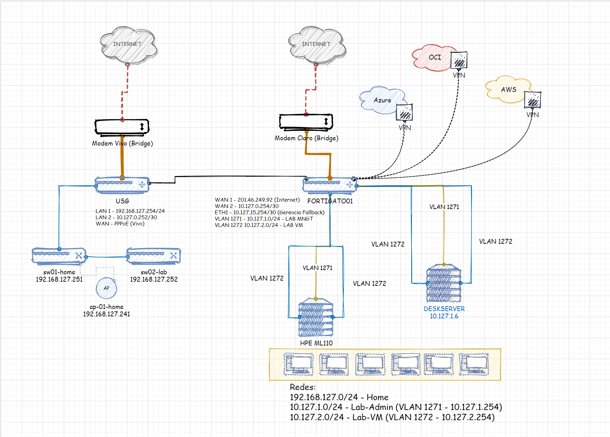
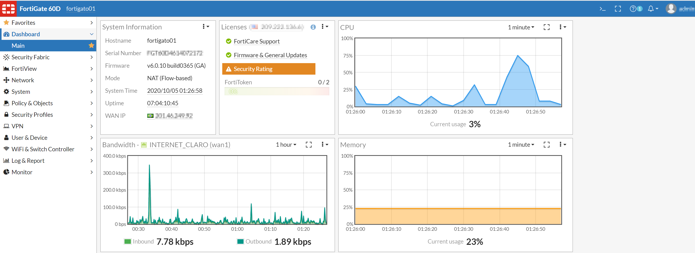
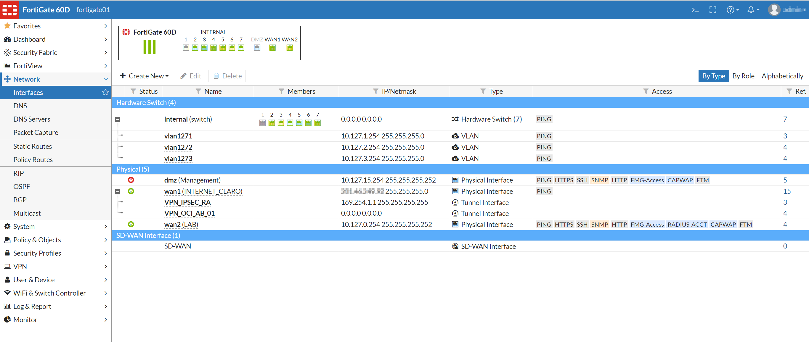

Firewall Fortinet Fortigate 60D no Home Lab
Blog Homelab Lab Fortigate BlogtoberCompartilhe esse post nas redes sociais...
Olá Homelabers!
Aproveitando o Blogtober 2020, estou tentando voltar com a regularidade do Blog, Tenho muita coisa para compartilhar e preciso realmente me organizar para conseguir criar algum conteúdo bacana aqui para vocês.
Hoje eu quero falar sobre a última aquisição para o meu home lab. Um Firewall (físico) Fortigate 60D. A ideia desse post é tentar ajudar você que está procurando um firewall para o seu lab.
Fortigate 60D

Primeiro vou falar sobre o Firewall Fortigate 60D, algumas specs. Mas antes de começar, vou deixar um agradecimento aqui ao Ronaldo Costa, que trabalha hoje na Fortinet como Public Cloud CSE - e ele trabalha com nuvem pública, inclusive OCI. Adiciona ele lá no Linkedinho. Quando eu estava procurando um firewall, procurei o Ronaldo e ele me deu uma grande dica sobre os Fortinets - Não compre nada abaixo da Série D. Mas isso vou abordar melhor mais para frente no post.

Specs
O Fortigate 60D é um firewall de entrada voltado para o mercado de SMB, redes pequenas ou para localidades remotas. Suas specs são bem modestas, mas atendem bem MINHAS NECESSIDADES.
- Oferece até 1,5 Gbps de desempenho firewall para uma rápida resposta de rede.
- Interfaces de 2 portas WAN Gigabit Ethernet (10/100/1000), 1 porta DMZ Gigabit Ethernet , 7 portas LAN Gigabit Ethernet portas de switch com até 2x portas PoE em modelos POE.
- Usa FortiOS, o sistema operacional da Fortinet, construído para rede de segurança. O FortiASIC “System on a Chip” (SoC), tecnologia de processador ASIC da Fortinet garantem as plataformas de segurança mais abrangentes e de mais alto desempenho.
- A proteção contra ameaças mais avançadas do setor, incluindo firewall, controle de aplicativos, proteção avançada contra ameaças, IPS, VPN e Web Filtering, tudo em um único dispositivo.
- Altamente personalizável para configurar os recursos de segurança e UTM que se precisa.
- Os serviços de assinatura de segurança FortiGuard entregam atualizações automáticas que garantem a proteção mais recente contra ameaças sofisticadas atuais.
- Gerenciamento em único painel e fornecimento remoto simplificam a implantação e suporte.
- Varredura de vulnerabilidades de rede ajuda na proteção de ativos de rede (servidores e estações de trabalho) fazendo a varredura para falhas de segurança.
- Com modelagem de tráfego (QoS) pode alocar recursos para diferentes tipos de tráfego para melhorar o desempenho, estabilidade e latência de aplicações.
- Domínios virtuais (VDOMs) para dividir o FortiGate em duas ou mais unidades virtuais independentes que prestam Segmentação de Rede para as necessidades de negócios ou para atender aos padrões de conformidade.
- Modelos disponíveis a cabo, wireless e PoE; backup Optional 3G/4G modem support via USB.

Como você pode notar na tabela abaixo, a Fortinet oferece 2 modelos diferentes da série 60D. O 60D e o 60D-POE e como o próprio nome diz, o que difere um do outro são 2 portas PoE.
Mas em resumo, para você que não quer ler as specs, essa caixinha tem 10 portas Gigabit (10/100/1000), uma porta console (na frente), uma porta USB e uma porta USB Micro também para console. Pelo que li na documentação, essa porta USB pode ser usada tanto para backup como com um modem 4G.
| Nome do produto | FortiGate-60D | FortiGate-60D-POE |
|---|---|---|
| Firewall Throughput (1518/512/64 byte UDP) | 1,5 Gbps | 1,5 Gbps |
| Firewall Max sessão simultânea | 500.000 | 500.000 |
| Firewall Novas sessões/Seg | 4.000 | 4.000 |
| IPS Throughput | 200 Mbps | 200 Mbps |
| IPSec Throughput 512 Byte Packet | 1 Gbps | 1 Gbps |
| Antivirus Throughput (Proxy) | 35 Mbps | 35 Mbps |
| Antivirus Throughput (Flow) | 50 Mbps | 50 Mbps |
| Total Network Interfaces | 7 x 10/100/1000 RJ45 Internal Ports, 2 x 10/100/1000 RJ45 WAN Ports, 1 x 10/100/1000 RJ45 DMZ Port | 2 x 10/100/1000 RJ45 POE ports, 5 x 10/100/1000 RJ45 Internal Ports, 2 x 10/100/1000 RJ45 WAN Ports, 1 x 10/100/1000 RJ45 DMZ Port |
| Capacidade total de armazenamento | 8 GB MLC Nand flash | 8GB MLC Nand Flash |
| Portas Power Over Ethernet (POE) | - | 2 |
(O texto acima foi retirado do site da Danresa - um dos poucos lugares onde você irá encontrar boas informações sobre os produtos Fortigate http://www.danresa.com.br/fortinet/FortiGate-60-Series.html)

Porque ter um firewall físico no Lab?
Tudo começou quando eu comecei a ter os primeiros contatos com o OCVS. Eu queria tentar simular um ambiente o mais próximo do real possível - Fechar uma VPN com a Cloud Oracle, depois ligar o meu Lab vSphere com o OCVS.
Quem acompanha o blog, sabe que toda a minha rede roda com equipamentos da Unifi. Contratei um segundo link de internet - com IP Fixo - e até cheguei a tentar a fechar uma VPN IPSec com a Cloud Oracle usando o Unifi USG, mas não foi um processo tão simples, o USG não fala BGP, etc. Então eu coloquei na cabeça que eu queria um firewall “Enterprise” para fazer isso. Fiz uma pequena lista nas minhas necessidades e comecei minha busca no Mercado Livre e encontrei dezenas de opções de firewall - alguns MUITO velhos, alguns com preço fora da realidade e do meu orçamento.
- Enterprise - Eu queria um firewall que fosse usado em empresas - Cisco, Fortinet, Checkpoint, etc.
- Appliance - Eu não queria usar nada virtual. Quero poder desligar uma parte do meu lab e continuar usando o firewall. Também queria um appliance pequeno e que consumisse pouca energia elétrica.
- Portas Gigabit - Não da para pensar em nada hoje em dia com portas Fast Ethernet. VPN IpSec, BGP - Precisava “falar” IPsec e BGP
- Fácil de configurar e usar - Eu não queria gastar mais tempo aprendendo a configurar o firewall do que realmente usando.
- Até 700 Reais - Esse era o meu limite de grana.
- Licenciamento - Eu procurava um firewall que funcionasse mesmo sem licenciamento.
Porque não usar Open Source?

Eu até cheguei a pensar em montar uma maquininha e colocar um desses firewalls open source tipo pfSense, Untangle, etc. mas eu acredito que isso não iria ser tão legal quanto ter um appliance enterprise e mesmo sabendo que vários clientes por ai usam esses softwares em suas redes, não é o “padrão” em grandes empresas.
Outro dia estava conversando com um cliente para desenhar uma arquitetura para um novo ambiente. Eu perguntei qual FW ele usava e ele disse Fortigate. Na hora eu pude alongar a conversa, falar que o Fortigate é totalmente compatível com o OCI, que eu uso no lab, etc. Foi super bacana. Se eu estivesse usando um pfSense, certamente não seria assim.
E assim, um dos motivos que eu tenho um home lab em casa é para poder simular e aprender coisas da vida real. ;)
Mas o Fortigate não é pago? Não precisa de licença?
Sim, precisa! Mas diferentemente de outros firewalls que eu já utilizei (Cisco ASA e Checkpoint), o Fortigate sem licença continua funcionando normalmente, deixando de funcionar somente as funções de UTM - chamadas de Security Features. Ou seja, você continua podendo fazer atualizar o firmware e utilizar todas as funções de FW e roteamento.
Como estou usando o Fortigate no meu home lab?
Quando contratei o segundo link de internet com IP físico e comprei o Fortigate, eu aproveitei para separar totalmente a minha rede de casa e a rede do LAB. Ou seja, agora tenho ambientes totalmente separados e as minhas cagadas os meus erros de configuração no LAB nunca mais irão atrapalhar o UP Time e o SLA da rede aqui de casa. Nessa época de COVID, meus filhos estão em casa o tempo todo, qualquer mínimo soluço no link de internet, eles me avisam antes da monitoração.
Antes estava tudo pendurado no Ubiquiti USG separado por VLANs. Agora esta tudo separado e rodando lindo.
Esse é o diagrama atual do LAB

Fortigato01
O meu Fortigato01 está atualmente rodando a versão v6.0.10 build0365 do FortiOS e esse appliance veio com uma licença ativa até Abril de 2021, mas como disse acima, todas as features de UTM estão desabilitadas. 
O Fortigate se tornou o default router da minha rede do Lab. Os dois hosts ESXi (3 portas cada) estão conectados no Fortigate, mais uma porta para o link WAN (Claro) e uma porta de uplink para o USG. Hoje estou apenas com duas portas livres, se no futuro eu comprar mais um host, vou ter que adicionar um switch.

Tenho algumas VPNs fechadas com a Oracle Cloud, Microsoft Azure e AWS e também uma VPN SSL para acesso remoto.
Tenho também algumas politicas que impedem o tráfego da rede HOME para o Lab. Apenas os meus notebooks podem acessar a rede do lab.
Pretendo fazer um post, com mais detalhes das configurações da minha rede, tanto no lab com o Fortigate, quando no Unifi.
Comprei um Fortigate e agora?
Se você como eu, comprou um Fortigate mas não conhece nada de Fortinet, vou deixar alguns links com informações bem bacanas para você começar.
O FortiOS não é um sistema difícil de utilizar, mas você precisa aprender os conceitos e principalmente fuçar bastante. Eu demorei quase uma semana, para poder entender e deixar tudo configurado como eu gostaria. Ainda estou aprendendo e descobrindo novas funcionalidades, mas recomendo bastante esse appliance.
Documentação Oficial:
Blogs, Canais & Comunidade:
- http://vbrain.com.br/
- https://fortixpert.blogspot.com/?view=classic
- https://www.youtube.com/c/FortiTip/videos
- https://www.youtube.com/c/FortinetGuru/videos
- https://youtu.be/tXNQxVvkTbY
- https://www.reddit.com/r/fortinet/
Minha opinião sobre o Fortigate 60D
Comprei o Fortigate em 31/07, ou seja, no momento em que estou escrevendo esse post, estou usando o Fortigate há pouco mais de 2 meses. Até o momento não tenho absolutamente nada do que reclamar desse equipamento. Consegui facilmente fazer tudo o que eu havia planejado - VPNs IPSec, VPN SSL para acesso remoto, segregar a rede, etc. Ele está ligado 24X7 desde que instalei e não notei aumento da conta de energia.
O meu amigo Pedro Calixto comprou o mesmo equipamento para o Lab dele e se não estou enganado, ele teve um problema com o PPoE que estava consumindo muito CPU. Não sei se existe um update de firmware que resolva esse problema.
Esse Fortigate 60D para um LAB é perfeito - e porque não dizer um pouco over-kill. Se você pretende utilizar o Fortigate 60D em uma empresa pequena acredito que seja um excelente equipamento, mas lembre-se que você vai precisar pagar assinatura para utilizar os recursos de UTM.
Ah, você deve estar se perguntando quanto eu paguei nesse equipamento. Depois de muito garimpar no Mercado Livre e no OLX eu acabei conseguindo uma barganha e paguei R$550,00 nessa caixinha de um vendedor no Mercado Livre.
Pessoal, mais uma vez, obrigado pela leitura. Espero que esse post tenha sido útil para você que está procurando um Firewall para o seu lab ou para sua pequena empresa.
Fiquem seguros!
Compartilhe esse post nas redes sociais...
Valdecir Carvalho
Nerd e pai orgulhoso da Mariana e João. Profissional Sênior de TI com foco em arquitetura de infraestrutura e cloud computing. Blogueiro, podcaster, palestrante, amante de comunidades técnicas, fotógrafo aposentado e adora jogos antigos.
#vExpert · #VMUGLeader · #VUGBrasil · #vBronwBagBrasil · #VeeamVanguard